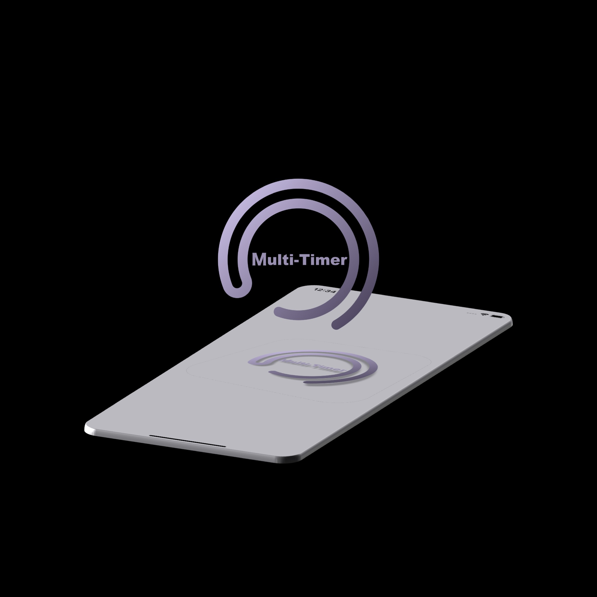
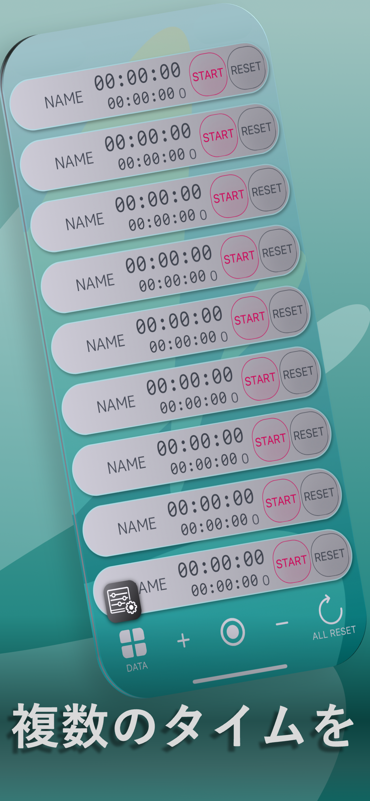
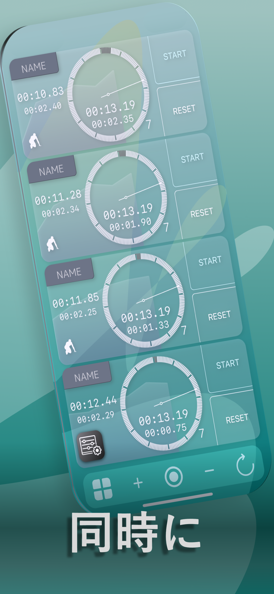
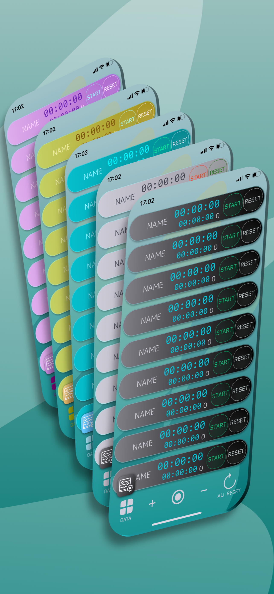
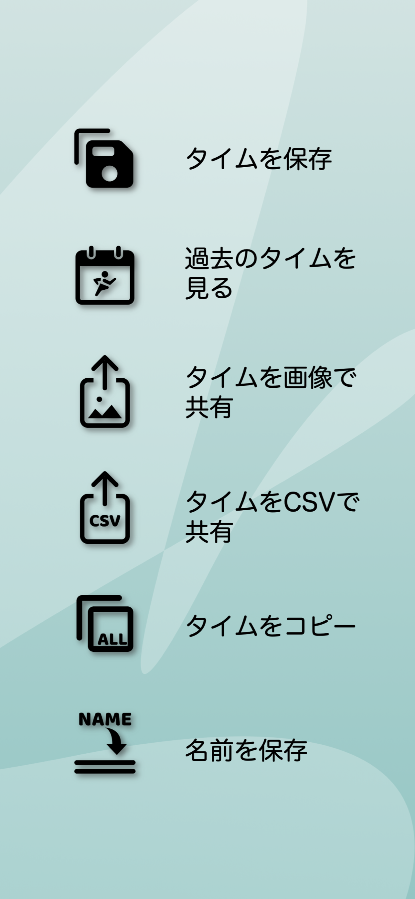

コーチ・部活マネージャー
陸上や水泳で複数選手を同時に計測。選手名・色で見分け、グループで一斉スタートやラップ記録ができます。
コーチ・部活マネージャーのための計測アプリ
複数選手のタイムを、1台のiPhone・iPadで同時に記録。Multi-Timerは、コーチや部活のマネージャーがラップ・スプリットを測り、練習記録を保存・共有できるストップウォッチ・タイマーアプリです。勉強・料理のカウントダウンや、HIITの運動・休憩管理にも使えます。
累計15.8万ダウンロード2026年9月20日現在
App Storeで見る基本機能は無料。写真判定・Online Timer・NoLook Timerは、それぞれ買い切り購入で継続利用、または広告視聴で一時的に利用できます。広告非表示は別途買い切りで購入できます。

Multi-Timerとは
こんな方におすすめ
中心となるのは、複数選手を一人で計測するコーチや部活マネージャー。運動・休憩の管理や、日常の複数タスクにも、目的に合うモードを選べます。
陸上や水泳で複数選手を同時に計測。選手名・色で見分け、グループで一斉スタートやラップ記録ができます。
ラップとスプリットを記録して、練習やレースを振り返りたい方に。保存した結果をカレンダーから確認できます。
HIIT・Tabata・サーキットの運動と休憩を組み合わせて反復。
周回タイムを残し、複数の選手や車両を名前で区別して管理したい方に。CSVや画像で結果を共有できます。
学習時間を区切ったり、複数の料理を並行して管理したり。日常用タイマーごとに名前・色・アラーム音・繰り返しを設定できます。
参加者ごとの持ち時間や、複数作業・工程の所要時間を管理したい方に。それぞれの計測欄に名前を付けて区別できます。
陸上・水泳に加え、競輪・自動車レース・競艇、ゲーム、業務での利用実績があります。MDMで管理された組織端末にも多く導入されています。
ストップウォッチの機能
START・STOP・LAP・RESETで個別に操作。複数のストップウォッチをグループにまとめ、一斉スタート・ストップやラップ記録もできます。
ラップは区間ごとの時間、スプリットはスタートからの累計時間。選手ごとのペースや通過タイムを振り返れます。
ストップウォッチごとに名前や色を変え、表示数を調整できます。手動の並べ替えや順位順の自動並べ替えにも対応。
DATAからタイトルを付けて保存し、カレンダーから過去の記録を確認。計測したタイムを後から編集することもできます。
結果をCSVファイルや画像で共有し、コピーしてExcelやGoogleスプレッドシートで整理・分析できます。
設定を有効にすると、音量を下げるボタンでストップウォッチを順番にスタート・ストップできます。
目的別のモード
左右にスワイプして計測モードを切り替えます。追加機能の利用方法や、音・通知の動作はモードによって異なります。
基本機能・無料
複数選手を同じ画面で計測し、ラップ・スプリットを記録。グループ操作と保存・共有で、チームの練習記録を管理できます。
買い切り購入 / 広告視聴で一時利用
ルームIDを共有して、別の端末のストップウォッチと連動。スタートとゴールが離れた場所や、複数人での計測に使えます。通信状態のよい環境が必要です。
買い切り購入 / 広告視聴で一時利用
選手が通過する瞬間にタップし、後から選手を割り当てたりタイムを修正したりできます。ラップは自動計算。音量を下げるボタンでもスタート・ラップ記録が可能です。
買い切り購入 / 広告視聴で一時利用
動画の再生位置とストップウォッチを連動。スロー再生・早送り・一時停止でゴールや水泳のタッチを確認し、複数選手のタイムを一人ずつ手動で記録できます。
基本機能・無料
料理・勉強用の複数カウントダウン。名前・色・音・繰り返しを設定できます。iOS 26以降でアラームを許可すると、画面ロック中やサイレント・集中モード中も音で通知。通常の通知では通知設定によって音の動作が異なります。
基本機能・無料
運動と休憩を自由に組み合わせ、最大9,999回繰り返せます。メニューの保存にも対応。切り替わりや終了音の確認にはアプリを開いたまま使用してください。このモードはバックグラウンドの音・通知には対応していません。
基本の使い方
左右にスワイプしてモードを選択。ストップウォッチの名前や色を設定し、必要に応じてグループにまとめます。
STARTで開始、LAPで通過タイムを記録し、STOPで停止。新しい計測を始めるときはRESETでリセットします。
DATAから保存を選び、タイトルを入力。記録はカレンダーから確認でき、CSVや画像で共有したりコピーしたりできます。
アプリ画面




機能・料金・通知の疑問に回答
Multi-Timerは、1台のiPhone・iPadで複数のストップウォッチやタイマーを操作するアプリです。特に複数選手を測るコーチ・部活マネージャーに適しています。ランナー・水泳・自転車競技の選手、体育やフィットネスの指導者、勉強・料理の時間を管理したい方にも使えます。
お使いの端末によっては、20個以上のストップウォッチを同時に使えます。画面に表示する個数は調整できます。すべての端末で同じ個数を保証するものではありません。
ラップタイムは区間ごとの時間、スプリットタイムはスタートからの累計時間です。Multi-Timerでは両方を記録できます。
はい。各ストップウォッチを個別にスタート・ストップ・リセットできます。グループにまとめると、一斉スタート・ストップやラップ記録もできます。
はい。DATAから保存を選び、タイトルを入力すると、カレンダーから過去の記録を確認できます。タイムの編集、CSVファイルや画像での共有、結果のコピーに対応し、ExcelやGoogleスプレッドシートで整理・分析できます。
Online TimerでルームIDを共有すると、別の端末のストップウォッチと連動できます。スタートとゴールが離れているときや、複数人で協力する計測に使えます。通信状態のよい環境が必要です。Online Timerは、個別の買い切り購入で継続して利用できるほか、広告視聴で一時的に利用できます。
NoLook Timerでは、選手の通過時にタップして記録し、後からどの選手の記録かを指定できます。タイムの修正とラップの自動計算に対応し、音量を下げるボタンでもスタートやラップを記録できます。NoLook Timerは、個別の買い切り購入で継続して利用できるほか、広告視聴で一時的に利用できます。
写真判定は、動画の再生位置とストップウォッチが連動する機能です。スロー再生・早送り・一時停止でゴールや水泳のタッチの瞬間を確認し、複数選手のタイムを一人ずつ手動で記録できます。写真判定は、個別の買い切り購入で継続して利用できるほか、広告視聴で一時的に利用できます。
Timer For Daily Useは、iOS 26以降でアラームの使用を許可すると、別のアプリの使用中や画面ロック中も音で知らせます。サイレントモード・集中モード中も利用できます。通常の通知を使う場合、音が鳴るかどうかは通知設定によって異なります。
Timer For Trainingは、バックグラウンドの音・通知に対応していません。運動・休憩の切り替わりや終了音を確認するにはアプリを開いたまま使用してください。運動と休憩を組み合わせて最大9,999回繰り返せ、メニューは保存できます。音はサウンドボタン、振動は設定画面で切り替えられます。
基本機能はすべて無料です。写真判定・Online Timer・NoLook Timerは、それぞれ一度購入すると継続して使える買い切り追加機能です。購入せずに、広告視聴で一時的に利用することもできます。広告非表示も別途買い切りです。最新の価格はApp Storeやアプリ内の購入画面で確認してください。
はい。iPhone・iPad向けのアプリで、iPadのマルチタスクにも対応しています。対応OSや端末の最新条件はApp Storeで確認してください。
はい。勉強・料理用の複数タイマーのほか、ゲームの持ち時間や業務の複数作業の時間管理にも使われています。競輪・自動車レース・競艇での利用実績があり、MDMで管理された組織端末にも多く導入されています。
開発者
医師・ランナーとして活動しながら、iOSアプリの企画・開発・運営を行う個人開発者です。Multi-Timerは、実際の練習で複数人を計測する際の課題から生まれました。
まずは無料の基本機能で、複数の時間をまとめて計測。
App StoreでMulti-Timerを見るページ更新日：